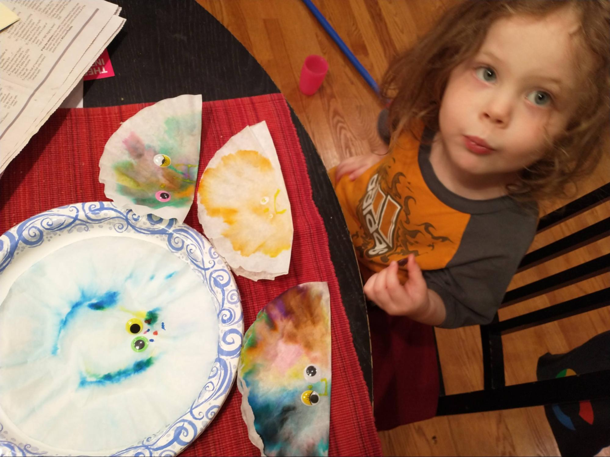
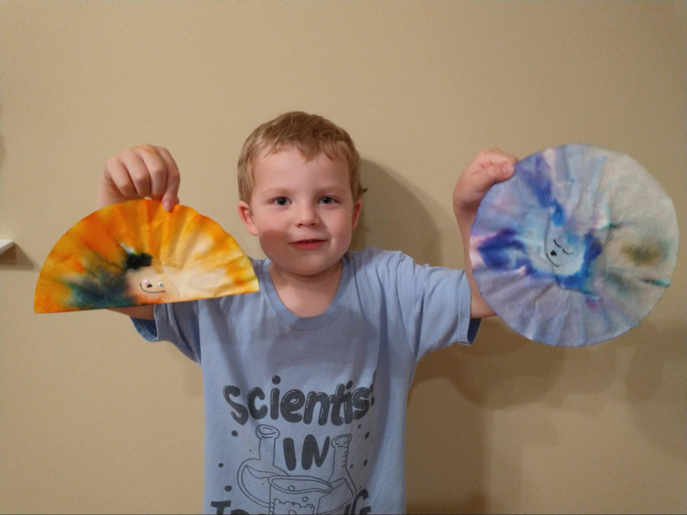

The Constitution of the United States of America defines our system of government. This remarkable document reflects the political genius of James Madison, regarded as the Father of the Constitution. First, it defines a government of limited powers, powers which are delegated to it by the people. By limiting the power of the federal government, the founding fathers hoped to maximize the freedoms of the citizens.
Much of the genius of our Constitution resides in how the powers of the government are separated into three distinct areas: legislative, executive, and judicial. To keep each of these power centers from growing too large, checks and balances are built into the Constitution so that each power center can exert influence over the other.
In addition to the separation of powers within the federal government there is also the sharing of power between the state governments and the national government, which is called federalism. Finally, the founding fathers established a republic, not a democracy, as one more constraint upon the unchecked power of a national government.
Getting the states to agree to give up any of their power to a national government was an herculean task. Over the long, hot summer of 1787 many compromises were needed, including the Great Compromise of equal representation in the Senate for large and small states as well as the Three-Fifths Compromise which counted slaves as ⅗ of a person for the purpose of representation in the House. Book

Title: A More Perfect Union
Author: Betsy Maestro
Illustrator: Giulio Maestro
Year Published: 2008
Length: 48 pages
Below is one suggestion for your week with the book A More Perfect Union. Please experiment with what works for your family! (Note: not all activities may be included in the suggested sample week below).
toc: "Songbook: _The Preamble_"
time: 3 minutes
freq: daily
Schoolhouse Rock! has a great video and song about the preamble to the Constitution. Excerpted lyrics are below:
In 1787 I’m told Our founding fathers did agree To write a list of principles For keeping people free.
The U.S.A. was just starting out A whole brand-new country And so our people spelled it out They wanted a land of liberty
You can find The Preamble on YouTube or Disney+.
time: 30-60 minutes
prep: 10 minutes
supplies: Coffee filters, markers, water, googly eyes (optional)
Ben Franklin commented that at last he knew for sure what kind of sun was on Washington’s chair – it was a rising sun!
This is a fairly simple craft for making your own Rising Sun.
 
time: 10 minutes
supplies: U.S. puzzle
The government was not working well. Many people were poor. The thirteen states were not cooperating with one another.
Remove the thirteen original states from the puzzle and ask your child(ren) to fit them together outside the frame of the puzzle. Once they’ve done that, separate each state slightly from the others. Now, tell your children that after the Revolutionary War the states were not working together. They each acted independently, separately from each other. The Constitutional Convention was convened to get the states to work together. Ask your child(ren) to push the states together to indicate how states worked together once they ratified the Constitution.
time: 5 minutes
freq: daily
time: 5 minutes
freq: daily
We the People of the United States, in Order to form a more perfect Union, establish Justice, insure domestic Tranquility, provide for the common defense, promote the general Welfare, and secure the Blessings of Liberty to ourselves and our Posterity, do ordain and establish this Constitution for the United States of America.
Depending on the age of your child(ren), ask them to memorize a portion of The Preamble to the Constitution of the United States of America.
An excellent aid to this activity is Peter Spier’s book, We the People: The Constitution of the United States. See the Supplemental Reading activity below.
time: 20-40 minutes
prep: 15 minutes
supplies: Paper cups, string, hanger, tape, hole punch or scissors, jelly beans
Right away the delegates began to argue. The members from the small states thought the Virginia Plan was unfair. Other delegates were afraid to let the people choose the President.
This activity was inspired by a preschool activity that we participated in. First, you will build a balance scale. Then, you will balance political power.
Now that you have your own balance scale you can use it to compare how political power was allocated between the Virginia and New Jersey Plans. Jelly beans will represent political power.
Start with the Virginia Plan, which allocated more power to the larger states. To keep things simple, select three jelly beans for each large state (Virginia, New York, Pennsylvania, Maryland, Massachusetts, North Carolina). All three jelly beans should be the same color for each state. Put all the jelly beans representing the large states into one cup. Then, select one jelly bean for each small state* (New Jersey, Delaware, Connecticut, Georgia, New Hampshire, South Carolina) and put them in the small cup. Which cup is heavier? Do your kids see how the Virginia Plan would have given more political power to the large states? And do they see why the smaller states would think this was unfair?
Now, let’s look at the New Jersey Plan. For this plan, allocate two jelly beans (of the same color) for each state. Put the jelly beans for the large states in one cup and the jelly beans for the small states in the other cup. Ask your kids if they see how this more evenly divides power between the states? And if they see why the larger states would think this was unfair?
To finish this exercise, ask your kids if they are ready to eat the jelly beans. This represents the fact that government power is derived from the people :-)
* The very smallest state, Rhode Island, did not send a delegate to the Constitutional Convention.
time: 30-45 minutes
prep: 15-20 minutes
toc: "Re-enactment: Chore Convention"
The signing of the Constitution was a formal ceremony. George Washington was the first to sign his name.
time: 10 minutes
In his room at a Philadelphia boardinghouse, Madison, a small man of great learning, labored over a plan to present to the convention. His boldest idea was that the nation’s government start with the people.
There are two more excellent picture books to supplement this module. The first, We the People: The Constitution of the United States is by Caldecott Medal winner Peter Stier. Each double page spread illustrates a single phrase of the Preamble to the Constitution. With 8-15 detailed drawings on every page, Spier contrasts colonial times with modern times – similar to the Schoolhouse Rock! video The Preamble, referenced above in the American Heritage Songbook. His rich illustrations can be savored by both younger and older children (and parents!).
Lynne Cheney’s We the People: The Story of the Constitution is aimed at slightly older children. It has more text telling a more detailed story of the struggles at the Constitutional Convention in 1787. Greg Harlin’s paintings are superb but less engaging for younger readers than Peter Spier’s numerous activityfilled illustrations.
time: 10 minutes
The Constitution had to be ratified, or approved, in each state before it could become law.
The preamble to the Constitution includes several words that a young reader may not be familiar with. Because the preamble was not written with the young reader in mind, it is very difficult to get a feeling for the meaning of the words from the context. We recommend reviewing the vocabulary words during the first reading and reinforcing them on every reading.
time: 10 minutes
Each side had given up something it wanted to create a plan that both sides could accept. The plan was called the Great Compromise or the Connecticut Compromise. This is a practical exercise to incorporate compromise in daily life. The idea is to ask the children to come up with a “Connecticut” compromise when they get in a disagreement. As situations come up, frame potential conflicts/disagreements as alternative plans (Virginia/New Jersey) and ask what the Connecticut Compromise could be in the situation.
My oldest two children were arguing about something, and each wanted something impossible if the other were to get what they wanted. I asked them what the Connecticut Compromise was in this situation. Although asking for a compromise was not generally well received in these situations, with the book fresh in their minds they seemed to think that this was the approach to take. They proposed and agreed upon a compromise.
time: 15 minutes
James Madison offered to write down everything that happened during the meetings… His work was so important he is called the Father of the Constitution.
It’s always fun to find the hidden and not-so-hidden objects. Especially during later readings, this is a good way to keep younger children engaged in the reading. For this story we have several challenges: